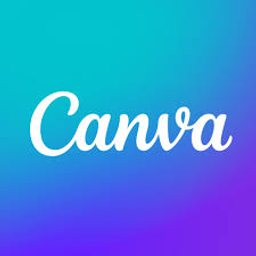
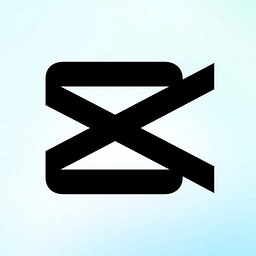
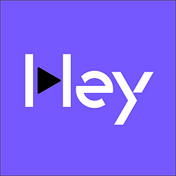

El mapa de la guía
Cuatro paradas, en orden. Cada una construye sobre la anterior — te recomendamos leerlas en este orden la primera vez, aunque después puedas volver a cualquiera cuando la necesites.
Qué es la IA (y por qué no es la de las películas)
Qué es esto, en una frase que entiendas — y por qué ya la estás usando sin saberlo.
◷ ~10 min de lectura Ir a la sección → 02Cómo funciona, sin una sola fórmula (spoiler: no piensa)
Cómo "aprende" una IA, y qué diferencia hay entre IA, machine learning y el chat que ya probaste.
◷ ~10 min de lectura Ir a la sección → 03Hasta dónde le podés confiar (y qué chequear siempre)
Si le podés creer lo que te contesta — y qué mirar siempre antes de usar una respuesta.
◷ ~14 min de lectura Ir a la sección → 04Con cuál empezás (y qué herramienta te sirve para qué)
Cuál de las herramientas que existen hoy te conviene a vos, y por dónde arrancar esta semana.
◷ ~15 min de lectura Ir a la sección →También: el glosario de primera vez — 15 palabras que vas a escuchar sobre IA, en lenguaje simple. Tocá las palabras subrayadas cuando aparezcan, o abrí el botón ¿Qué significa esto?.
Ver glosario →Qué es la IA (y por qué no es la de las películas)
Acá no vas a necesitar tener ningún chat abierto. Es la sección de "entender antes de tocar nada".
Ya la estás usando, aunque no lo sepas
Mirá el celular que tenés al lado. Sin abrir ningún chat, sin escribirle nada a nadie, hoy ya cruzaste inteligencia artificial varias veces:
El feedInstagram o TikTok te mostró ESE video y no cualquier otro.
La recomendaciónAlguna app te sugirió ESE producto, esa serie o esa canción.
El correctorTe cambió una palabra antes de que termines de escribirla.
Tu caraSi desbloqueás el celular mirándolo, algo la reconoció entre millones.
El spamEl filtro de tu mail dejó afuera la promo trucha del "premio" que nunca ganaste.
Ninguna de esas cosas te pidió permiso ni te avisó "che, esto lo hizo IA". Simplemente pasó, en el fondo, mientras vos hacías otra cosa. Ese filtro de spam, por ejemplo, no revisa mail por mail a mano: sigue un algoritmo — una receta de pasos que el programa ejecuta solo, una y otra vez, para decidir qué es spam y qué no.
Esto importa porque casi todo el mundo entra a este tema pensando en dos cosas: un robot de película o un chat al que le escribís. Y la verdad es más aburrida y más útil al mismo tiempo: la IA ya está metida, hace rato, en un montón de cosas comunes que usás sin pensarlo. El chat es apenas la punta que se ve. Esta sección es sobre la base entera.
¿Qué es, en lenguaje simple?
Existe una definición corta, de diccionario, que sirve como piso — del diccionario Oxford:
inteligencia artificial (sustantivo): la capacidad de las computadoras u otras máquinas de exhibir o simular un comportamiento inteligente; y también el campo de estudio que se ocupa de eso.
— diccionario Oxford (Oxford English Dictionary)
Dice dos cosas con la misma palabra, y el diagrama las separa:
Una máquina que se comporta "como si"
Fuera inteligente en algo puntual: reconocer tu cara, sugerirte un video, corregir una palabra.
La disciplina que investiga y construye esas capacidades
Como "medicina": la misma palabra nombra lo que te cura y la carrera que lo estudia.
Y ni los expertos se ponen de acuerdo en cuál de las dos usar: buscar "definición de inteligencia artificial" trae versiones técnicas, legales y de negocios que no calzan del todo. No es que vos no entendiste — el término es escurridizo. Marvin Minsky, pionero del campo, lo explicó así: palabras como "inteligencia" son palabras valija — cajones donde metemos cosas distintas bajo un solo nombre.
Por eso esta guía no persigue la definición perfecta. Se queda con algo más útil: un filtro de dos preguntas para mirar cualquier cosa y decidir, vos solo, si tiene IA o no.
El filtro que sí sirve: ¿decide sola? ¿mejora con el uso?
Fuera de la definición de diccionario, hay dos características que se usan para separar "esto tiene IA" de "esto es un programa común":
¿Decide sola?
Hace la tarea en una situación que cambia, sin que un humano le esté dictando cada paso en el momento. No es un trámite fijo tipo "apretá 1 para ventas, 2 para soporte": tiene que arreglárselas con variedad.
¿Mejora con el uso?
Cuantos más datos y experiencia junta, mejor le sale la tarea. No hace siempre exactamente lo mismo de la misma forma: ajusta.
Cuando un sistema hace algo solo (autonomía) Y encima mejora con el tiempo (adaptatividad), ahí está la línea. A esto, en la jerga, se lo llama a veces automatizar la tarea: que se resuelva sola, sin que alguien tenga que hacerla a mano cada vez. Y ese "mejorar con el uso" pasa porque el sistema aprende de la experiencia, es decir, de los datos: lo que la gente miró, compró, tipeó o corrigió antes.
Para que se entienda con algo de tu día a día:
| ¿Decide sola? | ¿Mejora con el uso? | ¿Tiene IA? | |
|---|---|---|---|
| Calculadora de la caja | No — solo suma lo que tipeás | No — hace siempre la misma cuenta | No |
| Planilla con fórmulas fijas | No — aplica la fórmula que vos escribiste | No — la fórmula no cambia sola | No |
| Filtro de spam de tu mail | Sí — decide mail por mail sin que lo mires | Sí — mejora si le marcás "esto no es spam" | Sí |
| App que sugiere cuánto stock reponer | Sí — calcula sola con las ventas de la semana | Sí — ajusta si las ventas cambian de patrón | Sí |
No hace falta que te aprendas la tabla de memoria. Hace falta que te quede el filtro: ¿decide sola en una situación que varía? ¿mejora con más uso? Si las dos respuestas son sí, estás mirando IA. Si es una regla fija que alguien escribió una vez y nunca cambia, no lo es — por más "inteligente" que suene el nombre del producto.
El primer malentendido: no es la de las películas
Acá está el error más común, y por eso el título de esta sección lo dice de entrada. Cuando alguien escucha "inteligencia artificial" por primera vez, casi siempre piensa en una mente completa: una computadora tipo HAL, Terminator o Ultron, que entiende de todo, razona sobre cualquier tema y tiene planes propios.
Eso no existe hoy. Ni en tu celular, ni en ningún laboratorio, ni en ninguna empresa que factura miles de millones. Lo que existe se llama, en la jerga del campo, IA estrecha — y es fundamental que te quede clara la diferencia con lo que la gente se imagina.
IA general (AGI)
Una máquina capaz de hacer cualquier tarea intelectual que hace un humano, con el mismo criterio general, adaptándose a lo que sea. Es la idea de "una mente" completa. Esto es lo que existe en las películas y en la ciencia ficción — no en tu escritorio.
IA estrecha (ANI)
Un sistema que hace una cosa, y la hace bien, dentro de un terreno acotado. El que te recomienda videos no sabe manejar un auto. El que reconoce tu cara no te puede armar un presupuesto. El corrector de tu teclado no entiende de qué trata el mensaje — solo predice la próxima palabra probable.
Lo que realmente existe hoy Un montón de sistemas separados, cada uno afilado para UNA tarea puntual (recomendar, reconocer una cara, corregir texto, sugerir un stock). Ninguno "entiende" el resto.
Herramientas afiladas, no una mente.
Todo lo que vas a cruzar en esta guía — el chat que le escribís, el filtro de spam, el reconocimiento facial del celular — es IA estrecha. Herramientas afiladas, no una mente. Guardate esta distinción: te va a servir cada vez que alguien te venda una herramienta como si "entendiera" tu negocio entero. Ninguna lo hace todavía.
Fácil para vos, difícil para la máquina (y al revés)
Hay algo contraintuitivo que te va a ayudar a calibrar qué tan "inteligente" es realmente algo: lo que es fácil para un humano suele ser difícil para una máquina, y viceversa.
Fácil para un humano · Difícil para una máquina
Agarrar un objeto de la mesa — para vos es automático, ni lo pensás: extendés la mano, calculás la fuerza justa, no se te cae ni lo aplastás. Para un brazo robótico, es uno de los problemas más difíciles que existen: calcular ángulos, presión, textura, peso, todo en tiempo real, con un objeto que puede resbalarse.
Difícil para un humano · Fácil para una máquina
Jugar al ajedrez — para un humano es difícil: estudio, memoria, cálculo de jugadas futuras. Para una máquina es relativamente manejable: reglas fijas, tablero limitado, una enormidad de jugadas calculadas por segundo. Una máquina le ganó al campeón mundial hace más de 25 años.
¿Por qué te sirve esto? Porque te da otra forma de calibrar expectativas: si una herramienta te promete que "entiende tu negocio con solo mirarlo" o que "hace de todo con sentido común", desconfiá. El sentido común del día a día — lo físico, lo ambiguo, lo que un chico de 5 años resuelve sin pensar — sigue siendo lo más difícil de imitar. Lo que sí resuelve bien una máquina es lo que se puede reducir a patrones y reglas, aunque a nosotros nos parezca "difícil".
El test de Turing
En 1950, Alan Turing propuso una forma simple de evaluar si una máquina "piensa": hacerla conversar a ciegas con una persona y ver si se puede distinguir cuál es cuál.
De dónde salió el nombre
El término "inteligencia artificial" lo propuso formalmente un grupo de investigadores en Estados Unidos en 1955, para nombrar un campo de estudio nuevo.
Ejercicio: ¿esto es IA o no?
Ya viste la tabla. Ahora casos distintos, de la calle y del negocio. Aplicá el filtro sin mirar arriba: ¿decide sola en una situación que varía? ¿mejora si se usa más?
1La respuesta automática de WhatsApp del local: siempre el mismo texto a la misma hora.Ver respuesta →
Es una regla fija que alguien configuró una vez. No decide según el mensaje del cliente y no mejora con el uso: repite el mismo texto.
2La cámara del local que avisa si hay fila larga en caja, mirando el video en vivo.Ver respuesta →
Tiene que "ver" escenas distintas (luz, gente, ángulo) y decidir sola cuándo hay cola. Ese reconocimiento se entrena con ejemplos y mejora con más uso.
3El termostato del taller con horario fijo: 8:00 prende, 18:00 apaga.Ver respuesta →
Sigue un reloj y una regla escrita. No adapta el patrón a cómo se usa el espacio ni "aprende" de la semana: es automatización simple, no IA.
4El banco que bloquea una compra rara en tu tarjeta antes de que vos digas nada.Ver respuesta →
Decide sola en un caso que nunca se repite igual (monto, lugar, horario) y se calibra con el historial de fraudes reales: autonomía + adaptatividad.
Si te salieron la mayoría bien, ya tenés el filtro instalado. Si dudaste en alguna, no importa — la línea a veces es fina. Lo que te llevás no es memorizar ejemplos: es saber preguntarte "¿decide sola? ¿mejora con el uso?" la próxima vez que alguien te diga "esto tiene IA".
- Podés mirar tres cosas que usás en tu negocio o en tu día (una app, una máquina, un programa) y decir cuál tiene IA y cuál no — y explicar por qué, con el filtro de autonomía y adaptatividad, no "porque sí".
- Podés explicarle a alguien, en una frase tuya y sin usar la palabra "robot", qué es la inteligencia artificial.
- Sabés por qué la IA de hoy hace bien UNA cosa puntual y no "cualquier cosa" — y por qué eso no es magia ni es Terminator, es IA estrecha.
- La próxima vez que alguien te muestre una herramienta "inteligente", te sale preguntar sola/o: ¿esto decide algo por su cuenta? ¿mejora si lo usás más?
Cómo funciona, sin una sola fórmula (spoiler: no piensa)
No vas a necesitar matemática, ni código, ni saber programar. Esta sección te muestra qué pasa "adentro" cuando una IA te contesta algo — lo justo para que sepas, de acá en adelante, hasta dónde tomarle la palabra. Eso es tema de la próxima sección; acá entendés el mecanismo primero.
El filtro de spam que nunca leyó un manual
Volvamos al filtro de spam de tu mail, el mismo que ya cruzaste en la sección anterior. Pensá cómo tendría que funcionar si alguien lo programara "a mano", como una planilla con fórmulas fijas: alguien se sienta, escribe una lista de palabras sospechosas —"premio", "ganaste", "reclamá ya", "haga clic acá"— y el programa descarta cualquier mail que tenga alguna de esas palabras.
Ese sistema duraría dos días. Los que mandan spam cambian las palabras todo el tiempo, agregan acentos raros, mezclan letras con números, escriben en otro idioma. Una lista fija se queda vieja apenas se publica. Lo que hace el filtro de spam de verdad es otra cosa, y es la puerta de entrada a todo lo que sigue en esta sección: nadie le escribió esas reglas.
Millones de personas marcan
Mails como spam o no spam, todos los días, en todo el mundo.
El sistema detecta qué se repite
Qué patrones aparecen más: palabras, remitentes desconocidos, links raros, hora del día.
Aplica ese patrón a cada mail nuevo
Y decide, solo, si va a la bandeja o al spam.
Es la misma idea que ya viste en la sección anterior cuando hablamos de que "mejora con el uso" — ahora viste cómo mejora, por dentro.
La frase que te tenés que llevar de esta guía
Acá va lo más importante de toda esta sección, la idea que sostiene todo lo que viene después (incluida la próxima sección entera):
La IA no piensa: predice patrones.
No es una forma de hablar ni una simplificación exagerada: es, literalmente, lo que hace por dentro un sistema como el filtro de spam o el chat que quizá ya probaste. El diagrama muestra la diferencia:
Entender / pensar
- Tiene una opinión.
- Razona el caso.
- Entiende lo que lee.
Predecir patrones
Calcula, con los patrones que vio antes, cuál es la respuesta más probable, y te la da.
Una analogía para que esto quede instalado de verdad: imaginá a alguien que leyó diez mil novelas policiales pero jamás investigó un crimen real. Si le contás el arranque de una historia nueva —"un mayordomo, una mansión, un testamento cambiado la noche anterior"— esa persona te va a decir "el mayordomo lo hizo" con total seguridad. No investigó nada: notó que, en las diez mil novelas que leyó, ese patrón se repite muchísimo. Acertará seguido. Pero no está razonando el caso: está reconociendo un patrón que ya vio miles de veces. Un chat como el que quizás ya usaste hace exactamente lo mismo, palabra por palabra, pero a una escala mucho más grande y sobre frases enteras en vez de una sola palabra.
Ejercicio: completá el patrón, como lo haría una IA
Sin pensar en el significado, solo en qué palabra viste más veces después de estas:
1"Estimado cliente, le escribimos para informarle que su pedido…"Ver respuesta →
"ha sido despachado" / "está en camino" — porque en miles de mails comerciales parecidos, esa es la frase que sigue casi siempre.
2"El horario de atención de nuestro local es de lunes a…"Ver respuesta →
"viernes" — el patrón más frecuente en avisos de horario comercial.
3"Muchas gracias por tu compra, cualquier consulta…"Ver respuesta →
"no dudes en contactarnos" — la coletilla más repetida en mensajes de cierre de venta.
Fijate que en ningún caso necesitaste saber de qué negocio se trataba, ni quién era el cliente: alcanzó con reconocer el patrón más común. Así de literal es "predecir patrones" — con muchísimos más datos y muchísima más potencia de cálculo detrás, pero la lógica de fondo es esta.
Entrenar: mostrarle ejemplos ya resueltos, no escribirle las reglas
A este proceso de "mirar montones de ejemplos ya clasificados y sacar el patrón solo" se lo llama entrenar un sistema. Entrenar no es programar en el sentido de escribir instrucciones paso a paso ("si dice tal palabra, hacé tal cosa"). Es mostrarle un montón de casos ya resueltos por humanos —millones de mails ya marcados spam/no spam, millones de fotos ya etiquetadas "es una cara humana" o "no lo es"— para que el sistema encuentre solo la regularidad que los conecta.
Veinte reglas exactas
Una por cada defecto posible. El día que aparece un defecto que el manual no previó, el empleado se queda sin respuesta.
Quinientas fotos ya clasificadas
"Este pasa", "este no pasa" — hasta que detecta el patrón solo, incluso en casos que el manual nunca previó.
Al resultado de ese proceso —lo que queda después de entrenar, la parte del sistema que ya "aprendió" el patrón y puede aplicarlo a un mail nuevo que nunca vio— se lo llama modelo. No es una lista de reglas que podés leer como un manual: es más parecido a una tabla enorme de asociaciones y probabilidades, ajustada automáticamente durante el entrenamiento. Cuando alguien dice "entrenamos un modelo con nuestros datos", se refiere exactamente a esto: al resultado entrenado, listo para predecir.
Un detalle que te conviene tener claro desde ahora, porque vuelve en la próxima sección: un modelo entrenado con ejemplos de hace un tiempo no sabe nada de lo que pasó después de ese entrenamiento, ni tiene forma de darse cuenta cuándo un caso nuevo no se parece a nada de lo que vio. Sigue prediciendo igual, con la misma confianza. Guardate esta idea; la vamos a necesitar entera en la próxima sección.
El mapa completo: dónde vive cada palabra que escuchás
Con "entrenar", "modelo" y "predecir patrones" ya instalados, ahora sí podés ordenar el vocabulario que seguramente ya escuchaste mezclado sin que nadie te lo explicara. No son cuatro cosas distintas: son capas, una adentro de la otra.
La caja más grande: todo sistema que muestra algo de criterio — autonomía + adaptatividad, el filtro de la sección anterior. El cartel LED de la vidriera NO entra acá; el filtro de spam SÍ.
La parte de la IA que aprende de datos en vez de reglas escritas a mano — como el filtro de spam, o la app que sugiere cuánto stock reponer mirando el historial de ventas de tu almacén: nadie programó "si vendiste 40 el lunes, pedí 45"; el sistema vio meses de ventas reales y sacó el patrón solo.
Una técnica particular de machine learning, más pesada y potente, hecha con muchas capas de red neuronal conectadas entre sí (la caja de abajo te explica qué es eso, y qué NO es). Hace posible que un sistema reconozca tu cara, o que un chat entienda una frase escrita de cualquier forma, con errores de tipeo incluidos. No necesitás operar esta capa vos: alcanza con saber que existe.
La caja más chica y más adentro de todas: modelos de deep learning entrenados con textos enormes (libros, artículos, conversaciones, páginas web), cuyo trabajo es predecir cuál es la palabra siguiente más probable. "LLM" son las siglas en inglés de large language model — modelo de lenguaje grande. Es la tecnología detrás del chat que probablemente ya probaste. Y la IA generativa es su categoría: sistemas que, en vez de solo clasificar (¿es spam o no?) o calcular un número (¿cuánto stock repongo?), crean contenido nuevo — texto, imágenes, audio, código — palabra por palabra, píxel por píxel, con el mismo principio: predecir qué es lo más probable que venga a continuación.
Un organismo vivo
Neuronas de verdad, conectadas entre sí, consume glucosa, duerme, con la complejidad química de un organismo vivo.
Capas de números
Que se ajustan durante el entrenamiento para acertar más seguido. Inspirada lejanamente en cómo se conectan las neuronas — sin neuronas reales ni biología detrás.
Por qué el chat que ya probaste es "IA generativa"
Con el mapa completo, ya podés ubicar exactamente dónde está parado el chat que quizás ya abriste alguna vez, aunque sea para hacerle una pregunta suelta: es un LLM haciendo IA generativa. Cuando le escribís un prompt (la instrucción), el sistema no "busca" la respuesta en ningún lado ni la "piensa" como la pensarías vos. Calcula, palabra por palabra, cuál es la continuación más probable de esa conversación — apoyándose en los patrones que encontró en cantidades enormes de texto durante su entrenamiento — y va armando la respuesta así, una palabra detrás de la otra, tan rápido que parece una frase completa de una sola vez.
Es genuinamente útil, y por eso llegó tan rápido a tanta gente: escribe, resume, ordena ideas, arma borradores, contesta preguntas generales, y lo hace con un nivel de soltura que ninguna herramienta anterior tenía. Pero todo lo que hace sale del mismo mecanismo que viste en esta sección de punta a punta: predice patrones, no piensa. No es magia, no es una mente, y no siempre tiene el dato correcto guardado en alguna parte para "buscarlo" — solo calcula qué es lo más probable que siga. Esa diferencia, que hoy suena chica, es exactamente la que abre la próxima sección: qué pasa cuando lo más probable no es lo verdadero, y cómo darte cuenta.
- Podés explicar con tus propias palabras qué significa "entrenar" un sistema, sin usar la palabra "programar" ni "reglas".
- Te sale decir la frase completa —la IA no piensa: predice patrones— y explicarla con un ejemplo tuyo, no con el del filtro de spam.
- Podés ubicar el chat que conocés dentro del mapa: IA → machine learning → deep learning → LLM / IA generativa, y decir qué hace cada capa.
- Sabés por qué se llama "red neuronal" y por qué esa misma palabra te puede hacer pensar mal (que es un cerebro digital, cuando no lo es).
- Te queda instalada esta idea para la próxima sección: un modelo entrenado sigue prediciendo con la misma confianza aunque el caso sea nuevo o el dato no lo tenga. Eso es lo que vas a entender ahora.
Hasta dónde le podés confiar (y qué chequear siempre)
Esta es la sección más importante de toda la guía. No porque las anteriores no importen — sin ellas, esta no se entiende — sino porque acá está el criterio que te va a evitar el peor error posible: usar algo que sonaba perfecto y estaba mal.
El dato que sonaba perfecto y estaba mal
Imaginate esta escena, porque le pasó a muchísima gente que arranca con estas herramientas: el dueño de un negocio le pregunta al chat un dato puntual — cuánto es una tasa, cuál es el nombre de un proveedor conocido en su rubro, en qué fecha vence un trámite, cuál es el artículo exacto de una norma que le pidió el contador. La respuesta llega rápido, redactada con total seguridad, con números precisos y hasta con un tono profesional que inspira confianza. La copia, la usa, la manda por mail o la aplica directo.
Y el dato era falso. No aproximado, no desactualizado: inventado. Un número que no existe en ningún lado, un nombre de proveedor que no está en ningún registro, una fecha que no coincide con nada real. Lo más incómodo de esta escena no es que la IA se haya equivocado — cualquier herramienta se equivoca. Lo incómodo es que nada en la respuesta avisaba que podía estar mal. Sonaba exactamente igual de segura que cuando el dato es correcto.
Nada en la respuesta avisaba que podía estar mal.
Esto tiene nombre, y entenderlo de una vez te va a ahorrar más de un dolor de cabeza en tu negocio: se llama alucinación.
Qué es una alucinación y por qué pasa (no es un bug raro, es el mecanismo mismo)
Una alucinación es, justamente, eso: cuando el sistema te da una respuesta que suena completamente segura y coherente, pero que no tiene respaldo real — un dato, una cita, un nombre o un hecho que el sistema armó porque encajaba con el patrón, no porque lo haya verificado en ningún lado.
Para entender por qué pasa esto, tenés que volver a la idea central de Cómo funciona, sin una sola fórmula: la IA no piensa, predice patrones. Ese mecanismo, que te sirve tan bien para escribir un mail o resumir un texto, tiene una consecuencia incómoda cuando lo que le pedís es un dato puntual. El sistema no tiene, en ningún lado, una base de "verdades verificadas" a la que consulte antes de contestarte. No hay un cajón separado donde busca "¿esto es cierto?" antes de escribir la respuesta. Lo único que hace, siempre, es calcular cuál es la continuación más probable de la frase — con datos reales que vio en su entrenamiento, cuando los tiene, y con la combinación de palabras más plausible que encuentra, cuando no los tiene.
Cuando no tiene el dato real, no se detiene ni te avisa.
Y acá está la parte que de verdad importa: cuando no tiene el dato real, no se detiene ni te avisa. Sigue haciendo exactamente lo mismo que hace siempre — predecir la palabra más probable — y como el patrón de "cómo suena una respuesta segura y bien fundamentada" también lo aprendió, te la entrega con el mismo tono seguro que usaría si el dato fuera cierto. No hay una luz roja, no hay un "no estoy seguro" automático, no hay forma de distinguir a simple vista una respuesta correcta de una inventada, porque ambas se generan exactamente con el mismo mecanismo y llegan con la misma confianza en la redacción.
Le pedís un dato.
El sistema calcula, palabra por palabra, cuál es la continuación más probable de la frase — no busca en una base de verdades verificadas: no existe ese cajón.
Tiene el dato real de su entrenamiento → arma la respuesta con eso.
No tiene el dato → igual completa con la combinación de palabras más plausible, sin detenerse ni avisar.
3 · Los dos caminos terminan en el mismo lugar: la respuesta sale redactada con el mismo tono seguro en los dos casos. El circuito no distingue entre acertar y alucinar — entrega igual de convencido.
Una forma de pensarlo que te lo va a dejar bien claro: un narrador improvisando una historia en voz alta, sin guión. Cuando llega a una parte que no tiene preparada, no se calla ni dice "acá no sé qué sigue" — sigue hablando, inventa un detalle que encaja con el tono de todo lo anterior, y sigue como si nada. El público, que no conoce el guión real, no tiene forma de notar en qué momento el narrador dejó de contar algo que sabía y empezó a completar el hueco con lo que sonaba bien.
¿cuál es el teléfono de atención al cliente de [proveedor específico de tu rubro]?
El teléfono de atención al cliente es 0800-XXX-XXXX, disponible de lunes a viernes de 9 a 18 hs.
Esa respuesta puede ser exacta. También puede estar completamente inventada, con un número que no corresponde a nadie. La redacción, el formato, el tono profesional: son exactamente iguales en los dos casos. Por eso el criterio no puede ser "¿suena convincente?" — tiene que ser otro, y es el que viene en el próximo bloque.
Un chat no es un buscador (aunque la caja de texto se parezca)
Hay una confusión muy común, y vale la pena desarmarla acá: como el chat te contesta en una caja de texto, parecida a la del buscador que ya usás todos los días, es fácil asumir que funciona igual. No funciona igual.
Cuando buscás algo en un buscador, el sistema te trae una página que existe de verdad, publicada por alguien, en algún lugar de internet, con una fecha y un autor identificables. Vos podés entrar a esa página y chequear la fuente. El buscador no "inventa" el contenido: lo encuentra y te lo señala. Cuando le escribís al chat, en cambio, el sistema arma una respuesta nueva, palabra por palabra, calculando la continuación más probable según todo lo que vio en su entrenamiento — a menos que la herramienta puntual que estés usando te aclare explícitamente que está buscando en tiempo real y citando una fuente concreta (algunas lo hacen, marcado y con links; sin esa marca explícita, no lo está haciendo). La respuesta puede sonar tan sólida y estar tan bien armada como la de un buscador, pero no viene de una página que podés abrir y verificar: viene de un cálculo de probabilidades.
El chat funciona como el buscador de siempre: cada dato que te da viene de una fuente real que podría mostrarte si se lo pidiera.
El chat arma una respuesta nueva, palabra por palabra, calculando qué es lo más probable — no siempre hay una fuente concreta detrás de cada dato, aunque la respuesta esté redactada con total seguridad.
Verificar antes de usar: el criterio que sí sirve
Acá está lo aplicable, lo que te llevás para usar de acá en adelante. No se trata de desconfiar de todo ni de chequear cada palabra que te devuelve una IA —eso te haría abandonar la herramienta al segundo día—, sino de saber qué tipo de contenido pedís siempre chequeo aparte, y cuál no lo necesita.
La regla es esta: si lo que te dio es un dato duro —algo que existe o no existe en el mundo real, con un valor exacto y verificable— lo chequeás siempre, en una fuente aparte, antes de usarlo. Si lo que te dio es forma —redacción, orden de las ideas, un borrador para editar, una manera de decir algo— no necesita ese tipo de chequeo: ahí tu criterio de negocio pesa más que cualquier verificación externa.
| Lo que te dio la IA | ¿Dato duro o forma? | ¿Lo chequeás en otro lado? |
|---|---|---|
| El precio o la tasa de algo | Dato duro | Sí, siempre |
| Un borrador de mail para un cliente | Forma | No, lo editás con tu criterio |
| Una fecha de vencimiento o de trámite | Dato duro | Sí, siempre |
| El orden de los puntos de una propuesta | Forma | No |
| El nombre de una ley, norma o artículo | Dato duro | Sí, siempre |
| El tono de un mensaje (más formal, más cercano) | Forma | No |
| Una dirección, un teléfono o un dato de contacto | Dato duro | Sí, siempre |
| Ideas para nombrar un producto nuevo | Forma | No, elegís vos cuál te sirve |
| Una cita textual o una cifra estadística | Dato duro | Sí, siempre |
Si dudás si algo es dato duro o forma, hacete una pregunta simple: ¿este dato existe afuera, en el mundo real, de forma verificable — o es una decisión de estilo que tomás vos? Un teléfono existe o no existe; una forma de redactar un párrafo no tiene "verdad" objetiva, tiene mejor o peor para tu caso. Lo primero se chequea siempre; lo segundo lo resolvés con tu propio criterio de negocio, sin necesidad de contrastarlo en ningún lado.
Dato duro
- Precio o tasa
- Fecha de vencimiento o trámite
- Nombre de ley, norma o artículo
- Dirección, teléfono o contacto
- Cita textual o cifra
Forma
- Borrador de mail
- Orden de una propuesta
- Tono del mensaje
- Ideas para nombrar algo
Ejercicio: ¿dato duro o forma?
Aplicá el criterio a estos cinco pedidos, como si se los hicieras hoy a una IA para tu negocio. Pensá primero "dato duro o forma" antes de abrir la respuesta:
1"Armame tres opciones de asunto para el mail de la promo de fin de mes."Ver respuesta →
Son alternativas de redacción, no hechos verificables — elegís la que más te convenza, con tu criterio, sin chequear nada afuera.
2"¿Cuál es la alícuota de IVA que le corresponde a mi rubro?"Ver respuesta →
Es un porcentaje que existe (o no) en una normativa real; se chequea siempre con tu contador o la fuente oficial antes de aplicarlo.
3"Resumime este contrato de diez páginas en un párrafo."Ver respuesta →
Y es un buen ejemplo de por qué conviene separar las dos partes: la estructura del resumen (qué va primero, cómo se ordena) es forma; pero cada cláusula, monto o plazo que aparezca adentro de ese resumen es dato duro y se coteja contra el contrato original, nunca contra el resumen.
4"Dame ideas de nombres para mi local nuevo."Ver respuesta →
No hay nada que verificar: es una lista de opciones para que elijas vos (aunque sí conviene chequear después, aparte, que el nombre elegido no esté ya registrado por otro negocio — eso ya es un dato duro distinto, de otra fuente).
5"¿En qué fecha empieza a regir el nuevo régimen de facturación que me dijiste la semana pasada?"Ver respuesta →
Y con una trampa extra: aunque el sistema ya te haya dado ese dato antes, no significa que lo haya guardado en ningún lado ni que lo recuerde con precisión — puede repetirlo, cambiarlo o directamente inventarlo de nuevo. Un dato duro se rechequea cada vez que lo volvés a usar, no solo la primera.
No le pongas mente humana (la IA no "entiende" tu negocio)
Hay un error de fondo que hace que todo lo anterior pese más de lo que parece: tratar a la IA como si fuera una persona que entiende lo que le estás pidiendo. No lo hace. Ya lo viste en la sección anterior con el mapa completo — sigue siendo, siempre, el mismo mecanismo de predicción de patrones, no importa lo fluida o "conversada" que suene la respuesta.
Bien redactado, con el vocabulario justo del rubro, un tono que parece "entender" tu negocio.
Bien redactado, con el vocabulario justo del rubro, un tono que parece "entender" tu negocio.
Sobre-confiar en un output que suena seguro es, para un negocio chico, el error más caro de todos — porque no es un error de la herramienta, es una decisión tuya de no chequear algo que se podía chequear con una consulta rápida aparte.
Esto no significa que la herramienta no sirva. Sirve, y mucho, para lo que hace bien: ordenar ideas, redactar más rápido, resumir, sugerir opciones. Significa que el criterio de "¿esto lo verifico?" tiene que ser tuyo, siempre, y no algo que le delegás a lo convincente que suena la respuesta.
Pensá en el alumno que no estudió para el examen pero escribe rápido, con buena letra y total seguridad: la letra prolija y el tono seguro no dicen nada sobre si el contenido es correcto. Acá pasa lo mismo, pero con tu negocio de por medio — cuanto más convincente suena una respuesta, más ganas dan de no chequearla, y ese es exactamente el momento en el que más conviene hacerlo. Aprovechás lo que la herramienta hace bien, y repasás aparte lo que puede salir caro si está mal.
Los tres mitos que te conviene tener calibrados
Para cerrar, tres ideas que circulan mucho y que, si las tenés mal calibradas, te llevan a esperar cosas que la herramienta no puede dar — o a desconfiar de cosas que sí funcionan bien.
"Todo tiene IA ahora"
Mucho marketing le pega la etiqueta "con IA" a productos que en realidad tienen una regla fija programada hace años, porque la etiqueta vende. Se desarma con el mismo filtro de autonomía y adaptatividad que viste en Qué es la IA (y por qué no es la de las películas): ¿decide solo? ¿mejora con el uso? Si la respuesta es no a las dos, no importa lo que diga la caja.
"Con datos alcanza"
Tener muchos datos no garantiza un buen resultado; si los datos que le das a un sistema (o que usó para entrenarse) son pocos, están mal cargados o no representan bien tu situación real, el resultado sale mal por más cantidad que sea — es la misma lógica que entrenar con quinientas fotos mal etiquetadas: cantidad de datos no es lo mismo que calidad de datos.
"Tiene que acertar siempre, si no, no sirve"
Ninguna herramienta de IA acierta el cien por ciento de las veces; esperar eso genera dos problemas opuestos e igual de caros — abandonarla en el primer error, o seguirle creyendo ciegamente y bajar la guardia justo antes del error que importaba. El criterio correcto es el de siempre: dato duro se chequea, forma no.
Un dato más: existen reglas sobre IA en varios países —la más nombrada es una ley europea— pero ninguna regula a una PyME que opera en LATAM. Sí conviene cuidar no cargar datos sensibles de tus clientes (nombres, documentos, tarjetas, direcciones) en una herramienta sin control sobre dónde queda esa información.
No hace falta una ley para que esto te importe: no cargues datos sensibles de tus clientes — nombre completo, número de documento, tarjeta, dirección — en una herramienta de IA sin saber dónde queda guardada esa información. Es el mismo cuidado que ya tenés con cualquier planilla o sistema donde guardás datos de gente real; acá aplica igual.
- Podés explicar qué es una alucinación con tus propias palabras, y por qué la IA no te avisa cuando está inventando un dato.
- Sabés separar, frente a cualquier respuesta, qué es un dato duro (lo chequeás siempre) de qué es forma (no hace falta).
- Te sale desconfiar un poco más, no menos, cuanto más seguro y prolijo suena el tono de una respuesta.
- Entendés por qué un chat no es un buscador, aunque la caja de texto se parezca tanto.
- La próxima vez que uses una respuesta para algo real de tu negocio —un número, un nombre, una fecha— te sale la pregunta antes de copiarla: "¿esto lo verifiqué en otro lado, o le creí porque sonaba bien?"
Con cuál empezás (y qué herramienta te sirve para qué)
Ya sabés qué es la IA, cómo funciona por dentro y hasta dónde confiarle una respuesta. Te falta una sola cosa: elegir con qué herramienta arrancás vos. Esta sección no te apura a bajar nada — te da el criterio para elegir bien.
Entendiste qué es la IA. Ahora la pregunta es otra: ¿cuál abrís?
Te pasó, seguro, alguna versión de esto: un conocido te dijo "usá tal cosa, es buenísima", otro te recomendó otra distinta, en algún grupo de WhatsApp de tu rubro alguien compartió una captura de una tercera, y en el medio viste un aviso de una cuarta. Todas prometen más o menos lo mismo — que te van a "ayudar con todo" — y ninguna te explica qué la hace distinta de las otras. El resultado más común no es elegir mal: es no elegir nada, o quedarte con la que bajaste primero sin saber si era la más indicada para lo que necesitás vos.
Esto tiene una explicación simple: la mayoría de lo que circula sobre estas herramientas está pensado para quien ya sabe de tecnología, o directamente para comparar características técnicas que a tu negocio no le importan. Nadie se sienta a explicarle a un dueño de un local, un taller o un estudio chico para qué sirve cada una en lenguaje simple — con qué tarea de un negocio real brilla cada una, y con cuál te conviene arrancar vos.
Nadie se sienta a explicarle a un dueño de un local, un taller o un estudio chico para qué sirve cada una en lenguaje simple.
Eso es lo que hace esta sección: un mapa honesto de las herramientas que existen hoy, ordenado no por lo técnico, sino por lo que necesitás resolver. Al final vas a saber con cuál de las cuatro empezar, y vas a tener un criterio propio para el resto de las decisiones que te vayan apareciendo — porque van a seguir apareciendo herramientas nuevas, y el criterio te sirve para todas, no solo para las cuatro de hoy.
Antes de elegir: qué es un "asistente general"
Las cuatro herramientas de las que vamos a hablar en esta sección — vas a reconocer los nombres, seguro cruzaste alguno — se llaman, en conjunto, asistentes generales: una sola herramienta, con la que hablás por chat (escribiendo o, en algunas, hablando), a la que le podés pedir cosas muy distintas entre sí sin cambiar de aplicación. Redactar un mail, resumir un texto largo, ordenar ideas para una propuesta, resolver una duda puntual, armar una lista: todo eso, con el mismo asistente, en la misma conversación.
La palabra clave es general: no están hechas para UNA sola tarea, como el lector de patentes de la barrera del estacionamiento que viste en la primera sección de esta guía — están hechas para acompañarte en un montón de tareas distintas de tu día a día. Eso las hace, para la mayoría de un negocio chico, el punto de partida más razonable: antes de salir a buscar una herramienta específica para cada cosa, con un buen asistente general ya resolvés la mayor parte de lo que un negocio necesita día a día.
Los cuatro asistentes generales que existen hoy, y que probablemente ya escuchaste nombrar en algún lado, son ChatGPT, Claude, Gemini y Grok. Los cuatro hacen, en mayor o menor medida, cosas parecidas: conversan con vos, escriben, resumen, responden preguntas. La diferencia entre ellos no es que uno sea "más inteligente" que otro — ya viste en la sección anterior que medir la inteligencia de una herramienta con una sola regla no tiene mucho sentido. La diferencia real es en qué brilla cada uno y dónde encaja mejor con la forma en que ya trabajás. Eso es lo que viene ahora.
Los 4 asistentes generales, en lenguaje simple
Es la opción más pensada para el uso general del día a día: le pedís de todo con un prompt claro, desde redactar un texto hasta resolver una duda suelta, pasando por armar un borrador rápido o ayudarte a pensar en voz alta un problema. Tiene una app propia y un modo de conversación por voz, así que también le podés hablar en vez de escribirle.
Tu necesidad es variada y cambia de un día al otro — hoy un mail, mañana una idea para una promo, pasado una duda sobre cómo redactar un aviso — y si te gusta la idea de tener una tarea que se repite (por ejemplo, un resumen semanal de ventas) resuelta de forma automática sin tener que armarla a mano cada vez.
Si buscás un solo asistente para arrancar sin pensar demasiado en cuál te conviene según tu rubro, ChatGPT es, para la mayoría, el default más seguro: hace un poco de todo, y lo hace bien.
Se destaca en dos cosas puntuales: escritura larga y cuidada, y trabajo con documentos densos. Si tu negocio necesita redactar textos comerciales extensos y prolijos — una propuesta para un cliente grande, mails que tienen que sonar profesionales, contenido más elaborado para tus redes — Claude tiende a producir algo más pulido de entrada, con menos vueltas de edición. Es también, de los cuatro, el que mejor acompaña si en algún momento tu negocio necesita ayuda con código: páginas, planillas automatizadas, ese tipo de tarea técnica.
Tu cuello de botella es la escritura: si te cuesta redactar bien, si tenés contratos o informes largos que necesitás entender rápido, o si estás armando algo (una web, una planilla) que tiene una parte de código de por medio.
Lo que Claude no hace es generar imágenes — es el único de los cuatro sin esa función dentro del chat, algo para tener en cuenta si buscás una sola herramienta que te resuelva texto e imagen a la vez.
Su diferencial no está en una función exclusiva, sino en dónde vive: si tu negocio ya usa Gmail para el correo, Drive para guardar archivos, Calendar para la agenda o Docs para escribir, Gemini trabaja directamente sobre eso. Le podés pedir que resuma los mails de hoy, que busque un dato dentro de un archivo que ya tenés guardado, que ordene tu agenda de la semana — sin exportar nada ni pasarle el archivo a mano, porque ya está ahí. También genera imágenes en la misma conversación.
Tu negocio ya vive, en gran parte, dentro de las herramientas de Google — que es el caso de una enorme cantidad de negocios chicos en la región, aunque no se hayan puesto a pensarlo así. Si todos los días abrís Gmail y Drive para laburar, Gemini te ahorra el paso de mover información de un lado a otro.
Su rasgo distintivo es la conexión con lo que está pasando ahora mismo: de los cuatro, es el que mejor sigue noticias, tendencias y conversación en tiempo real, con acceso directo a lo que se está diciendo en la red social X. El tono, además, es más informal y menos corporativo que el de los otros tres — algo que a algunos usuarios les resulta más cómodo, según cómo les guste que les hablen. También genera imágenes y video corto en la misma conversación.
Tu negocio necesita estar atento a la actualidad — precios que cambian rápido, una novedad de un proveedor, qué se está comentando de tu rubro hoy — o si preferís una herramienta con un tono más relajado que el de un asistente de oficina.
Elegir entre estos cuatro no te libera del criterio de la sección anterior — si te da un dato duro, lo verificás igual, sin importar cuál abras. Repasalo en Hasta dónde le podés confiar si hace falta.
No todo es "el mismo asistente para todo": el mapa por tipo de salida
Hasta acá viste los cuatro asistentes generales, pensados para conversar y ayudarte con texto. Pero además de ellos existen herramientas dedicadas a un solo tipo de resultado —una imagen, un video, una voz— y lo hacen mejor que un asistente de paso porque están construidas solo para eso. Acá van seis que vale la pena conocer por nombre, para el día en que una necesidad puntual de tu negocio se vuelva frecuente.
Los cuatro, sin excepción — la base de todos.
Claude no genera imágenes. + dedicadas como Canva IA, con más control sobre el resultado.
+ dedicadas como CapCut y HeyGen, para proyectos más largos o profesionales.
Claude no tiene modo de voz. + dedicadas como ElevenLabs, para doblar video o sintetizar una voz específica.
Con modo dedicado en su ecosistema. + herramientas para quien programa todo el día.
Los cuatro; Grok el más fuerte en actualidad. + buscadores dedicados exclusivamente a esto.
Seis herramientas dedicadas que vale la pena conocer por nombre
Estas seis no son "asistentes generales": cada una está hecha para UNA cosa puntual, y por eso la hace mejor. No necesitás memorizarlas todas de entrada — alcanza con saber que existen y para qué caso de tu negocio serviría cada una, para acordarte el día que la necesites.

Canva IADiseñoArma diseños, imágenes y textos a partir de una idea; tiene plan gratis para arrancar.
Tenés un local o un kiosco y necesitás el flyer de la promo, el post de Instagram y la historia de esta semana, ya.
Un mismo diseño lo podés convertir a otro formato —de afiche a presentación, por ejemplo— en un solo paso.

CapCutVideoEdita videos cortos para redes —cortes, música, recorte para cada formato—; lo básico es gratis y varias funciones con IA, como los subtítulos automáticos, van con el plan pago.
Tenés un local gastronómico: grabás el plato del día con el celular y lo dejás listo, con música y recorte vertical, para Reels o TikTok el mismo día.
Podés generar una versión digital tuya a partir de un video corto, y usarla para hablar en videos nuevos sin grabarte de nuevo cada vez.
Lee los documentos que vos le subís y responde solo con esa información, citando de dónde sacó cada dato; tiene plan gratis para arrancar.
Sos un estudio contable o una consultora chica: cargás una normativa nueva y tus notas, y le pedís un resumen para que el equipo se ponga al día antes de ver al cliente.
Puede convertir tus documentos en un audio tipo podcast, con dos voces de IA conversando sobre lo que subiste.
Arma presentaciones, documentos y páginas simples a partir de un texto, sin maquetar diapositiva por diapositiva; tiene plan gratis para arrancar.
Ofrecés un servicio: armás la propuesta comercial para un cliente —problema, solución, precio— en media hora, sin pelear con plantillas.
Con el mismo texto podés generar, además de la presentación, una página web simple o una pieza para redes.

HeyGenVideo con avatarEscribís un guion y un avatar —un presentador digital generado por IA— lo lee a cámara, sin que grabes vos; podés probarlo gratis, con un uso limitado.
Tenés una academia o un centro de estética con cursos: grabás una vez la capacitación y la doblás a otro idioma para tu equipo o tus clientes, sin filmar de nuevo.
El doblaje no es solo audio nuevo: también mueve los labios del avatar para que coincidan con el idioma nuevo.
Convierte un texto escrito en una narración con voz humana, en varios idiomas; podés probarlo gratis para uso personal; para usar la voz en contenido de tu marca hace falta el plan pago, que incluye la licencia comercial.
Tenés una marca chica con reels: escribís el guion del producto de la semana y generás la voz en off para el video, sin locutor.
Con el mismo servicio también podés generar efectos de sonido y música, no solo voz.
La idea que te tenés que llevar es simple: elegir un asistente general y elegir una herramienta dedicada son dos decisiones distintas, que tomás en momentos distintos. Para el día a día de tu negocio te alcanza y te sobra con uno de los cuatro asistentes generales. Una herramienta dedicada como las seis de arriba recién vale la pena cuando una necesidad puntual se vuelve frecuente —imágenes para redes todos los días, videos todas las semanas, un documento que tu equipo tiene que consultar seguido. De varias de estas va a haber guía COCO GO propia — próximamente.
Hay una forma simple, propuesta por Andrew Ng, un investigador conocido del campo de la inteligencia artificial, para reconocer qué tareas de tu negocio son candidatas a resolverse con estas herramientas: si una persona con experiencia puede decidir algo pensándolo un segundo o menos, esa tarea probablemente ya se puede automatizar con IA hoy. Clasificar un mail como urgente o no urgente: un segundo. Elegir qué respuesta dar a una consulta simple y repetida: un segundo. En cambio, decidir la estrategia completa de precios de tu negocio para el año que viene no es una decisión de un segundo — ahí la IA te puede ayudar a pensar, pero la decisión sigue siendo tuya. No es una regla exacta, es un termómetro rápido para saber por dónde mirar primero.
Ejercicio: ¿con cuál de los 4 arrancarías?
Aplicá todo lo que viste en esta sección a cuatro situaciones de negocio. Pensá tu respuesta antes de abrir el porqué — no hay una única correcta en todos los casos, pero sí una más razonable que las otras.
1Necesitás redactar un mail de reclamo de pago, prolijo pero firme, para un cliente que se atrasó.Ver respuesta →
Cualquiera de los cuatro te sirve para esto — es texto general. Si además querés que quede especialmente cuidado, Claude tiende a dar un resultado más pulido de entrada.
2Tenés 40 mails sin leer en tu casilla de Gmail y necesitás saber cuáles requieren respuesta hoy.Ver respuesta →
Gemini. Trabaja directamente sobre tu Gmail sin que tengas que copiar y pegar nada.
3Tu página web dejó de funcionar bien en el celular y sospechás que es un problema del código.Ver respuesta →
Claude o ChatGPT — son los dos con modo dedicado a código dentro de su ecosistema.
4Querés saber qué se está comentando HOY en redes sobre un problema que tuvo un proveedor grande de tu rubro.Ver respuesta →
Grok. Es el más fuerte de los cuatro siguiendo lo que pasa en tiempo real.
Si dudaste en alguno, no pasa nada — varias situaciones las resuelve más de uno de los cuatro razonablemente bien. Lo que te llevás no es la respuesta exacta: es la pregunta de acá en más frente a cualquier tarea nueva — "¿esto es texto general, o hay uno de los cuatro que brilla en particular?".
Por dónde empezar esta semana
Con todo lo de arriba, ya tenés más criterio del que tiene la mayoría de la gente que abre una de estas herramientas por primera vez. El paso que sigue es simple, y es uno solo: elegí UNO de los cuatro asistentes generales, no los cuatro a la vez —el que mejor calzó con vos en los perfiles de arriba— y probalo con algo real de tu negocio esta semana.
Elegí UNO de los cuatro asistentes generales, no los cuatro a la vez.
Una vez que elegiste, la tarea de esta semana no es "hacerle una pregunta de prueba" — es llevarle un problema real de tu negocio: el mail que tenés pendiente, el resumen que necesitás, la propuesta que tenés que armar. Ahí es donde se nota si te sirve de verdad, y ahí es también donde aplicás todo lo que aprendiste en el resto de esta guía: el filtro para reconocer si algo tiene IA de verdad, la idea de que predice patrones y no piensa, y el criterio de qué chequear siempre antes de usar una respuesta.
Elegir el asistente es la mitad del camino. La otra mitad — usarlo, una vez, con algo real, y salir de esa sesión con un resultado concreto en la mano — es la parte que armamos aparte, paso a paso, para que no la tengas que resolver sola o solo.
- Podés nombrar los cuatro asistentes generales — ChatGPT, Claude, Gemini y Grok — y decir, de memoria y con tus propias palabras, en qué brilla cada uno.
- Entendés que "elegir un asistente general" y "elegir una herramienta para una tarea puntual" (una imagen, un video, código) son dos decisiones distintas, y sabés cuál te toca resolver primero.
- Te sale aplicar la regla de 1 segundo para reconocer, en tu propio negocio, qué tarea es candidata a resolverse con una de estas herramientas.
- Elegiste, para vos, con cuál de los cuatro vas a empezar esta semana — y podés explicar por qué ese y no otro.
El glosario de primera vez
Las 15 palabras que vas a cruzar cuando leas o escuches sobre IA, en lenguaje simple y con un ejemplo de negocio real. Tocá una palabra subrayada en la guía o abrila acá — y usá Volver al lugar para regresar donde estabas.
La capacidad de una computadora o un programa de comportarse como si tuviera algo de criterio —reconocer, recomendar, decidir dentro de una tarea puntual— sin que un humano le esté dictando cada paso. También es el nombre del campo entero que estudia y construye eso.
Ejemplo de negocio: En la peluquería, la app que le sugiere a la clienta productos "para vos" según lo que compró antes tiene IA adentro, aunque nadie le haya puesto ese cartel.
Lo vas a escuchar cuando… Digan "esto tiene IA", "es un producto con inteligencia artificial" o "ahora todo lleva IA".
Una receta de pasos que un programa sigue, en orden, para decidir algo o resolver una tarea. No es magia ni es "pensar": es una secuencia de instrucciones que se ejecuta sola, una y otra vez.
Ejemplo de negocio: El filtro de spam del mail de la gomería sigue un algoritmo: revisa cada mail que entra con la misma receta de pasos para decidir si es spam o no.
Lo vas a escuchar cuando… Digan "cambiaron el algoritmo", "el algoritmo de Instagram" o "eso lo decide un algoritmo".
La información que un sistema junta y usa para hacer mejor su tarea con el tiempo: lo que la gente compró, miró, tipeó, corrigió. Sin datos, un sistema de IA no tiene de qué aprender.
Ejemplo de negocio: En el almacén, los datos son el historial de ventas de la semana: cuánto tubo se vendió, qué días, a qué hora. Eso es lo que una app de reposición de stock usa para sugerir cuánto pedir.
Lo vas a escuchar cuando… Digan "necesita más datos para aprender", "con esos datos ya alcanza" o "no tiene suficiente historial todavía".
Un sistema de IA que hace UNA cosa puntual, y la hace bien, dentro de un terreno acotado. No entiende nada fuera de esa tarea. Es literalmente todo lo que existe hoy, en cualquier herramienta que uses.
Ejemplo de negocio: El lector de patentes de la barrera del estacionamiento reconoce patentes muy bien — y no sabe hacer absolutamente nada más. Eso es IA estrecha.
Lo vas a escuchar cuando… Digan "IA estrecha", "hace una sola cosa" o cuando alguien te aclare "eso no es una mente, es una herramienta afilada".
Una máquina capaz de hacer CUALQUIER tarea intelectual que hace un humano, con el mismo criterio general, adaptándose a lo que sea. Es la idea de "una mente completa". No existe todavía en ningún producto real — es lo que ves en las películas de ciencia ficción.
Ejemplo de negocio: Ninguna herramienta que uses en tu negocio hoy es esto — ni la más cara ni la más nueva. Si algo te promete "hace de todo, entiende todo", desconfiá.
Lo vas a escuchar cuando… Digan "inteligencia artificial general", "AGI" o cuando alguien confunda una herramienta puntual con "una mente que lo sabe todo".
Hacer que una tarea se resuelva sola, sin que una persona la repita a mano cada vez. En esta guía es un concepto, todavía no una acción: acá entendés QUÉ significa; en niveles más avanzados del catálogo se aprende a montarlo.
Ejemplo de negocio: Que el sistema de reposición de stock del vivero calcule solo cuánto pedir cada semana, en vez de que alguien lo revise a mano, es automatizar esa tarea.
Lo vas a escuchar cuando… Digan "hay que automatizar eso", "que se resuelva solo" o "no lo quiero seguir haciendo a mano".
El resultado que queda después de entrenar un sistema con montones de ejemplos: no es una lista de reglas escritas, es algo más parecido a una tabla enorme de patrones y probabilidades aprendidas, lista para calcular una respuesta frente a un caso nuevo.
Ejemplo de negocio: Cuando la app de reposición de stock de la ferretería "aprende" de meses de ventas, lo que queda entrenado —lo que ya sabe calcular cuánto pedir— es el modelo.
Lo vas a escuchar cuando… Digan "entrenamos un modelo con nuestros datos", "el modelo se equivocó" o "ese modelo es más nuevo que el otro".
Mostrarle a un sistema un montón de ejemplos ya resueltos por personas —mails ya marcados spam o no, fotos ya clasificadas, textos ya escritos— para que encuentre solo el patrón, en vez de que alguien le escriba las reglas a mano.
Ejemplo de negocio: En el vivero, entrenar sería mostrarle al sistema meses de ventas reales ya registradas para que aprenda solo qué plantas se venden más en cada época, sin que nadie le dicte esa regla.
Lo vas a escuchar cuando… Digan "lo entrenaron con estos datos", "todavía no está entrenado para eso" o "hay que reentrenarlo".
Lo que hace en el fondo cualquier IA cuando te contesta algo: no piensa ni entiende el pedido, calcula cuál es la continuación más probable según los patrones que vio durante el entrenamiento.
Ejemplo de negocio: Cuando el corrector del teclado te sugiere la próxima palabra del mensaje que le mandás a un cliente, no entendió tu conversación: predijo la palabra más probable después de la anterior.
Lo vas a escuchar cuando… Digan "la IA no piensa, predice patrones" o cuando algo suene demasiado seguro para ser cierto y te preguntes de dónde salió ese dato.
La parte de la IA donde el sistema aprende mirando ejemplos, en vez de que alguien le programe las reglas a mano. Es un subconjunto de la IA: toda IA que "aprende de datos" usa machine learning, aunque no toda IA lo necesite.
Ejemplo de negocio: El filtro de spam del mail de la gomería es machine learning en acción: nadie escribió la lista de palabras prohibidas, el sistema la sacó de millones de mails ya marcados.
Lo vas a escuchar cuando… Digan "eso lo resuelve con machine learning", "aprendizaje automático" o lo vean abreviado como "ML".
Una estructura matemática de capas de nodos conectados entre sí, inspirada lejanamente en cómo se conectan las neuronas del cerebro humano — pero no es un cerebro digital ni se le parece en la complejidad real. Se usa para las tareas más difíciles de resolver con reglas fijas, como reconocer una cara o entender un texto libre.
Ejemplo de negocio: El sistema que reconoce tu cara para desbloquear el celular usa una red neuronal entrenada con millones de fotos — no "piensa" tu cara, calcula si los patrones coinciden.
Lo vas a escuchar cuando… Digan "eso corre con redes neuronales" o alguien compare (mal) una IA con "un cerebro artificial".
Un tipo de modelo entrenado con cantidades enormes de texto, cuyo trabajo es predecir cuál es la palabra siguiente más probable en una frase. "LLM" son las siglas en inglés de large language model — modelo de lenguaje grande. Es la tecnología detrás del chat que probablemente ya probaste.
Ejemplo de negocio: Cuando le pedís a un chat que te redacte un mail de cobro para un cliente, quien arma esa respuesta palabra por palabra es un LLM.
Lo vas a escuchar cuando… Digan "LLM", "modelo de lenguaje" o comparen "qué modelo" usa cada chat.
Sistemas —los LLM son un caso— que en vez de solo clasificar algo o calcular un número, crean contenido nuevo: texto, imágenes, audio o código, prediciendo paso a paso qué es lo más probable que siga.
Ejemplo de negocio: Pedirle a una herramienta que arme desde cero un afiche para la promo del local, o un texto de cero para las redes de la peluquería, es usar IA generativa — no busca algo hecho, lo genera.
Lo vas a escuchar cuando… Digan "IA generativa", "genAI" o "esto lo generó una IA" hablando de texto, imagen o audio creado de cero.
Cuando una IA te da una respuesta redactada con total seguridad, pero el dato, la cita o el hecho que contiene está inventado — no tiene respaldo real, aunque suene exactamente igual de convincente que una respuesta correcta.
Ejemplo de negocio: Que un chat te dé, con total seguridad, un número de trámite o una tasa que no existe en ningún lado, es una alucinación — y la redacción no te avisa que pasó.
Lo vas a escuchar cuando… Digan "la IA alucinó ese dato", "eso te lo inventó" o cuando un número o una cita no aparezcan en ningún lado por más que los busques.
El texto que le escribís a un chat o a una herramienta de IA para pedirle que haga algo: la instrucción, el pedido, el "qué quiero". Cuanto más claro y concreto sea el prompt, más útil suele ser la respuesta.
Ejemplo de negocio: En vez de "escribime un mail", un buen prompt es: "Redactá un mail corto de cobro a un cliente que debe la factura de marzo, tono amable, 5 líneas, sin amenazar".
Lo vas a escuchar cuando… Digan "el prompt", "hay que mejorar el prompt" o "prompt engineering" (la práctica de escribir mejores instrucciones).
Antes de seguir, chequeá qué te llevás
No se envía a ningún lado — es para vos. Si podés marcar los cuatro, la guía cumplió.
Tocá cada casilla cuando lo sientas listo. No se envía a nadie: queda solo en este dispositivo.
Si te faltó alguno, no hace falta que releas toda la guía: volvé a la sección puntual (el mapa de arriba te lleva directo) y repasá solo esa parte.
💬 ¿Te sirvió esta guía?
Contanos qué te faltó o qué no entendiste — es opcional y anónimo: una línea de texto libre, sin pedir mail ni ningún otro dato.
Tu primer resultado real con IA
Es gratis — y es el paso natural después de esta guía: una sesión guiada donde resolvés UNA tarea concreta de tu negocio, con tus datos, no con una pregunta de prueba. Salís con un resultado usable y sabiendo con cuál de las cuatro herramientas seguir.
Después, si querés ir más a fondo, están las guías-curso de cada asistente:
Si querés el primer paso guiado primero: Primer paso con IA (gratis) →